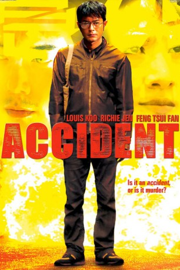

IMDB-Wertung: 6.7 / 10
IMDB-Wertung: 6.7 / 10  Metascore:
Metascore: 
Eigentlich ist er zuständig für besonders kreative und nicht nachweisbare Morde, doch plötzlich glaubt Ho Kwok-fai, dass er selbst ins Visier eines Killers geraten ist und verfolgt wird.
Alternativ: Accident (Englischer Titel)
 IMDB-Wertung: 6.7 / 10 Metascore:
Eigentlich ist er zuständig für besonders kreative und nicht nachweisbare Morde, doch plötzlich glaubt Ho Kwok-fai, dass er selbst ins Visier eines Killers geraten ist und verfolgt wird.
Jahr: 2009
Dauer: 83 Minuten
FSK: 16
Land: Hong-Kong Studio: Lighthouse Home EntertainmentTonspuren:
Untertitel:
Auflösung: 1080p (1920x816) Größe: 3573 MB
Genre: Thriller
Regisseur: Pou-Soi Cheang
Drehbuch: Rowan Joffe
Soundtrack:
Darsteller:
 Louis Koo als Ho Kwok-fai, The Brain
Louis Koo als Ho Kwok-fai, The Brain Stanley Sui-Fan Fung als Uncle
Stanley Sui-Fan Fung als Uncle Michelle Ye als Woman
Michelle Ye als Woman Suet Lam als Fatty
Suet Lam als FattyDatei: X:\HD-Eastern-Modern(A-M)\Accident Mörderische Unfälle (2009, FSK16, 1920x816).mkv seit 14.07.2016
Festplatte: HD Eastern+Western
 Es gibt insgesamt 104 Filme in der Gruppe 'HD-Eastern-Modern(A-M)'
Es gibt insgesamt 104 Filme in der Gruppe 'HD-Eastern-Modern(A-M)'